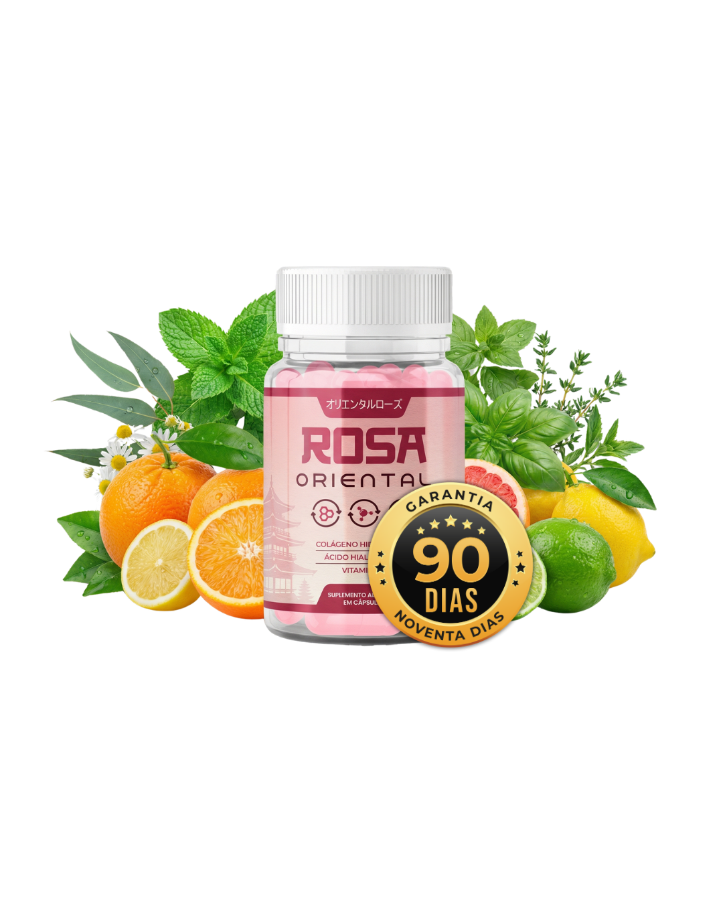

Imagine descobrir que o creme facial que você usa religiosamente todas as noites não consegue, fisicamente, chegar onde as linhas de expressão e a flacidez realmente nascem. Não é culpa sua. Não é falta de cuidado. É pura física — e compreender essa regra muda completamente a forma como cuidamos da pele após os 40 anos.
Existe um princípio científico amplamente documentado na dermatologia mundial chamado Regra dos 500 Daltons (estudado na Universidade de Amsterdam). Ele explica, com precisão matemática, por que tantos cosméticos tópicos deixam a pele macia por algumas horas, mas não devolvem a firmeza perdida.
"Sua pele não foi projetada pela natureza para ser uma esponja. Ela foi projetada para ser um escudo impenetrável."
Para proteger nosso corpo do mundo exterior, a camada externa da pele só permite a passagem de moléculas minúsculas — de no máximo 500 Daltons. O problema? A molécula de colágeno presente nos cremes comuns é gigantesca: possui cerca de 300.000 Daltons. É literalmente como tentar passar uma bola de basquete pelos furos de uma peneira fina.
Por que os cremes ficam presos do lado de fora?
Veja a diferença entre o tamanho máximo que a barreira da pele permite entrar e o tamanho das fibras nos cosméticos tradicionais:
Daltons
Tamanho máximo que o poro cutâneo absorve
Daltons
Tamanho da molécula nos cremes comuns
Os 3 Mitos que Fazem Você Gastar Dinheiro sem Ver Resultado
A Solução Japonesa: O Efeito "Carro-Forte"
Por séculos, a tradição oriental sempre tratou a firmeza da pele de dentro para fora. Mas a engenharia japonesa moderna deu um passo além e resolveu o maior obstáculo da suplementação: como atravessar o estômago sem perder a potência dos ativos?
A resposta foi o desenvolvimento da Nano-Cápsula Blindada — que funciona exatamente como um "carro-forte microscópico". Essa cápsula envolve os nutrientes, resiste ao ácido do estômago sem se romper e só abre suas portas quando chega ao intestino delgado, onde a absorção para a corrente sanguínea é máxima.
Dali, os micro-peptídeos viajam pelo sangue e chegam diretamente às camadas profundas da pele do rosto, pescoço e colo — exatamente onde nenhum creme jamais conseguiu chegar.
O "Quarteto de Ouro" Dentro de Cada Cápsula
Para que a restauração aconteça de forma completa, os pesquisadores combinaram na mesma cápsula os 4 bioativos essenciais que a pele feminina perde aceleradamente após os 40 anos:

1. Ácido Hialurônico
Age como uma "esponja molecular" capaz de reter até 1.000x seu peso em água, preenchendo os espaços entre as células e suavizando o aspecto das linhas finas de dentro para fora.

2. Colágeno Hidrolisado Japonês
Quebrado em micro-partículas de altíssima pureza, fornece os "tijolos" exatos para devolver a densidade, firmeza e elasticidade ao rosto e pescoço.

3. Vitamina C Protegida
Enquanto nos cremes ela oxida ao abrir o pote, dentro da cápsula ela chega 100% ativa às células — disparando a síntese natural de colágeno e uniformizando o tom da pele.

4. Vitamina B5 (Pantenol)
Reconstrói a barreira protetora natural da pele, impedindo que a hidratação escape ao longo do dia e devolvendo o viço saudável e macio.
No Brasil, a fórmula original com essa tecnologia foi batizada de Rosa Oriental. E por confiar integralmente na biodisponibilidade dos seus ativos, a distribuidora oficial liberou uma condição especial para novas clientes:
Conheça o Rosa Oriental
Apenas 1 cápsula à noite (2 horas antes de dormir) para nutrir e reconstruir as camadas profundas da sua pele enquanto você descansa.


O Desafio de 90 Dias (Risco Zero)
Você recebe o Rosa Oriental em casa com Frete Grátis e faz o teste real. Se em 90 dias você não ficar encantada com a firmeza, hidratação e viço da sua pele no espelho, basta enviar uma mensagem e devolvemos 100% do seu investimento.
>> SAIBA MAIS SOBRE O ROSA ORIENTAL << 🔒 Clique acima para verificar a disponibilidade e os kits promocionais no Site Oficial
Nota Importante à Leitora: Para evitar falsificações, o verdadeiro Rosa Oriental não é comercializado em farmácias nem em marketplaces como Mercado Livre, Shopee ou Amazon. A venda com garantia de 90 dias e envio imediato pelos Correios é feita exclusivamente através da página oficial do fabricante no botão acima.
Gente, essa explicação dos 500 Daltons abriu minha mente! Eu já tinha gastado uma fortuna em cremes que prometiam mundos e fundos e só deixavam o rosto oleoso. Estou no final do segundo pote do Rosa Oriental (peguei o kit de 5 meses) e até minha irmã perguntou o que eu fiz no rosto de tão firme e iluminada que minha pele está!
Eu sempre tive receio de comprar pela internet, mas chegou direitinho pelos Correios aqui no interior de SP em 5 dias úteis. Tomo todo dia 2 horinhas antes de dormir. As linhas perto da boca e no colo deram uma suavizada linda, já não fico mais escondendo o pescoço com lenço.
Aconteceu exatamente isso comigo com o colágeno em pó! Tomava aquele pó ruim todo dia de manhã e não via diferença nenhuma. Agora entendi que o estômago destruía tudo antes de chegar na pele. Acabei de garantir meu kit de 3 + 2 grátis pelo link oficial aqui da matéria, obrigada!
Meninas, vale muito a pena pegar o kit com os potes extras grátis. Eu dividi o primeiro mês com minha filha de 36 anos e nós duas amamos, a pele acorda descansada e super macia, parece que segura a hidratação o dia inteiro.